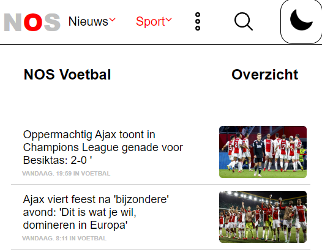

Fed2
Voor het vak Fed 2 moest ik 2 pagina,s van een website nabouwen/verbeteren ik heb gekozen voor de nos site. Ik heb hier veel nieuwe css skills geleerd zoals position, flexbox en het maken van besturing doormiddel van toetsenboord. Daarnaast heb ik ook met behulp van javascript een darkmode gemaakt.
